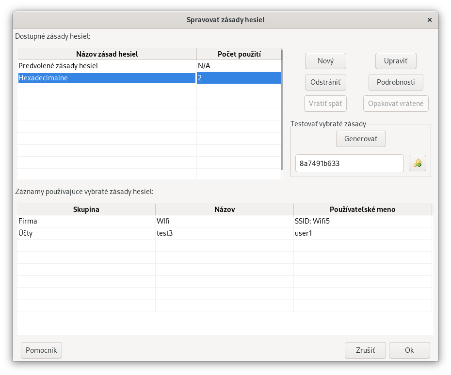

Zásady hesiel popisujú pravidlá, ktoré sa používajú na vytvorenie hesla – písmená, veľkosť písmen, dĺžku a všetky špeciálne znaky, ktoré sú povinné. Niektoré inštitúcie vyžadujú iba malé písmená, zatiaľ čo iné vyžadujú použitie veľkých písmen, číslic a špeciálnych znakov, ako aj stanovenú minimálnu dĺžku. Vo všeobecnosti je vhodné použiť najdlhšiu povolenú dĺžku a najväčšiu povolenú kombináciu znakov. Overte si presné požiadavky na heslo so správcom systému, kam sa prihlasujete.
Teraz je možné vybrať predvolený zoznam symbolov, ktorý sa bude používať v databáze, prostredníctvom položky menu "Spravovať > Zásady hesiel...". Okrem toho môže mať každý záznam svoj vlastný zoznam symbolov určený prostredníctvom dialógových okien Pridať alebo Upraviť záznam. Poznámka: tieto zoznamy symbolov sa nepoužívajú pre vysloviteľné ani ľahko čitateľné heslá.
Dialógové okno Spravovať zásady hesiel vám umožňuje nastaviť globálne zásady generovania hesiel, ako aj vytvoriť vlastné zásady. Všetky tieto sú uložené v databáze, a preto sú špecifické pre databázu. Tieto zásady je možné dočasne prepísať pre konkrétny záznam a heslá kedykoľvek manuálne upraviť v dialógovom okne Upraviť/Zobraziť záznam.
Každá položka "Použiť" (napr. Použiť číslice, Použiť symboly atď.) zaškrtnutá v dialógovom okne zabezpečí aby do generovaných hesiel boli zahrnuté zadané znaky. Každé heslo bude tiež vygenerované na zadanú dĺžku (nie kratšie, nie dlhšie). Jedinou výnimkou je zaškrtávacie políčko Použiť iba hexadecimálne číslice. Ak je zaškrtnuté, heslá budú obsahovať znaky, ktoré predstavujú číslice zo šestnástkovej sústavy. Výberom tejto možnosti sa deaktivujú všetky ostatné zaškrtávacie políčka.
Výberom možnosti Generovať vysloviteľné heslá vygeneruje "nezmyselné" slovo, ktoré by malo byť vysloviteľné, napríklad "ingstria", "ringsony" atď. Toto je užitočné, keď potrebujete heslo, ktoré je bezpečné a relatívne ľahko zapamätateľné bez jeho uloženia v aplikácii Password Safe. Výberom tejto možnosti s možnosťou Použiť číslice a/alebo Použiť symboly sa umožní nahradenie niektorých písmen ich ekvivalentom v tvare "leet", napr. "E" sa môže nahradiť písmenom "3", "S" písmenom "5" atď.
Znaky, ktoré sa pridajú, keď je začiarknuté políčko Použiť symboly, sú: + - = _ @ # $ % ^ & ; : , . < > / ~ \ [ ] ( ) { } ? ! | pokiaľ nie je začiarknuté aj políčko Použiť iba ľahko čitateľné znaky , v takom prípade sú znaky iba: + - = _ @ # $ % ^ & < > / ~ \ ?
Písmená použité pri začiarknutí políčka Použiť iba ľahko čitateľné znaky sú: a b c d e f g h i j k m n o p q r s t u v w x y z a A B C D E F G H J K L M N P Q R T U V W X Y a číslice sú obmedzené na 3 4 6 7 8 9.